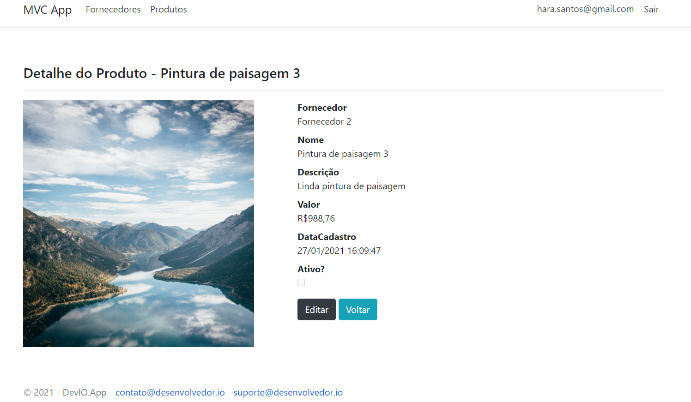
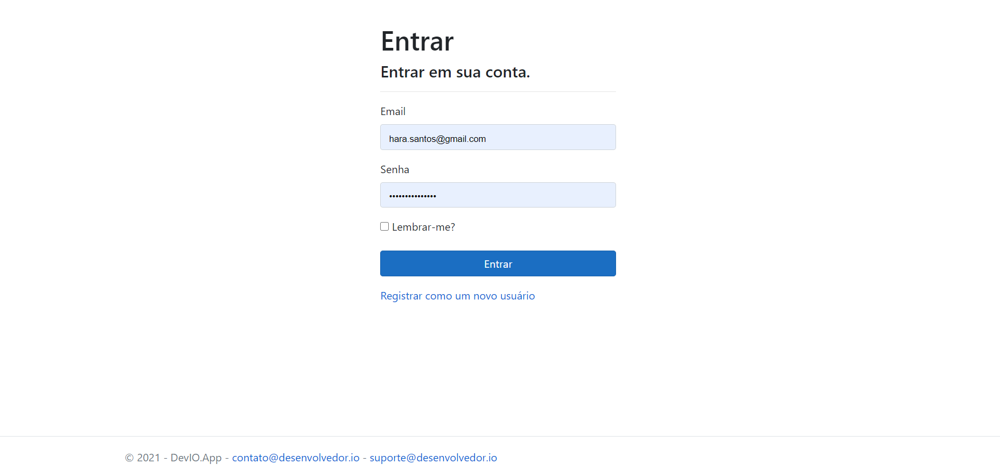
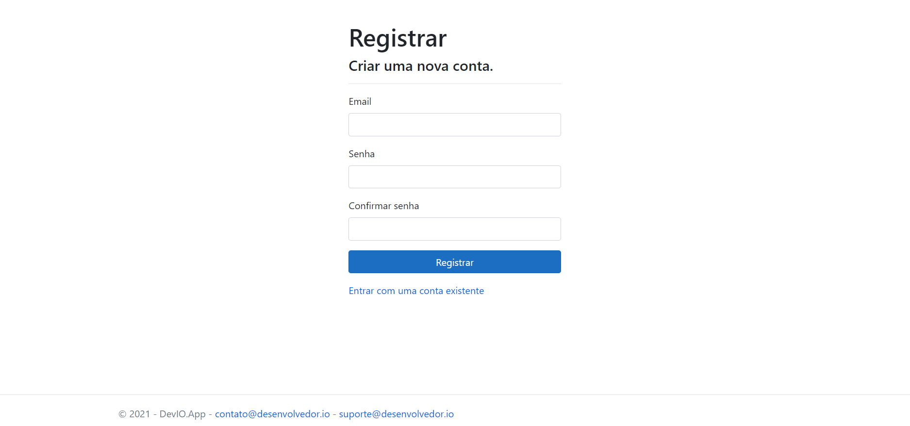
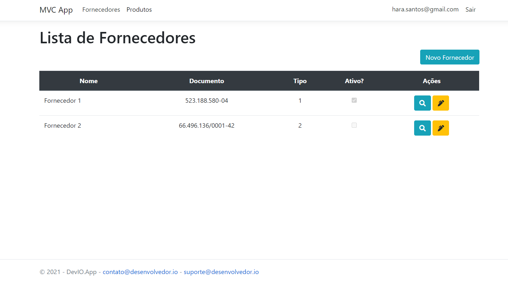
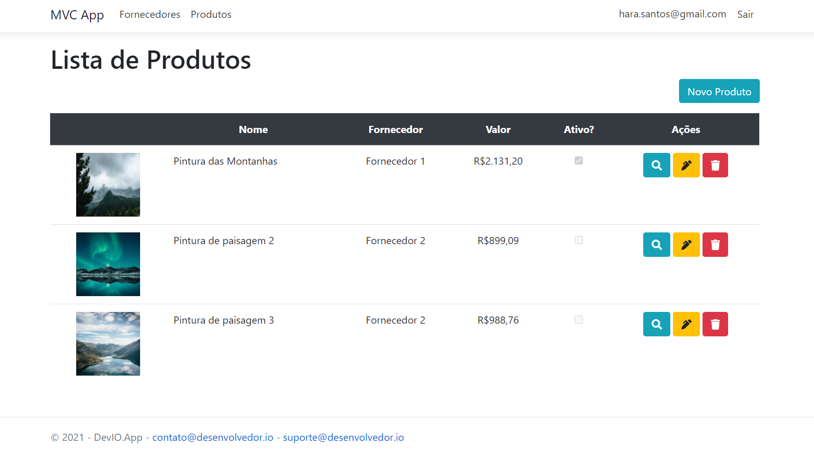
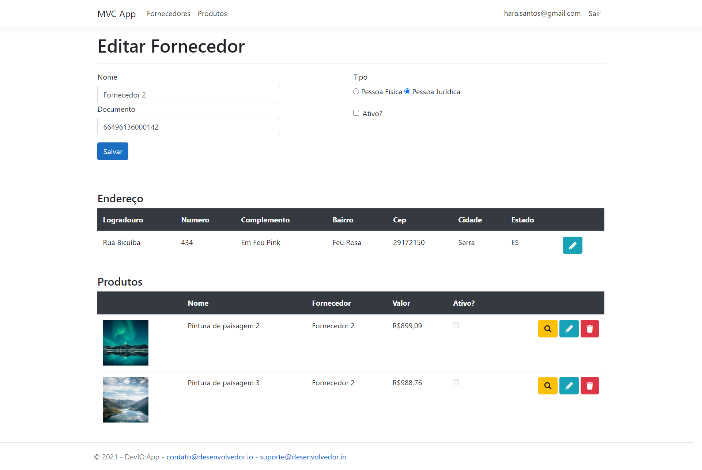

DevIO MVC
About Project
It is a simple system that consists of product management by suppliers. When a user registers and login into the application he will basically register suppliers and the products acquired by each supplier.
The main technology used in this project was ASP.NET MVC Core, which consists of using Razor, Bootstrap and Jquery in the front-end and C#, EF Core, Identity (user management) on the back end. Another important point also in this project is the use of KissLog to carry out issuance and management application logs from external framework.
Even though it is a small system there are good practices, use of components and dependencies that are very commonly applied for small/medium size. The entire code was based on the great course of the MVP Eduardo Pires, however there were minor changes in the front-end and considerable changes in the back-end made by me with the intention of learning mainly in the considerably "new" stack from Microsoft which is the .Net Core. Right below there are some images views from the developed app.
    Related links:
DevIO MVC website
Source code
Eduardo Pires
Desenvolvedor.io